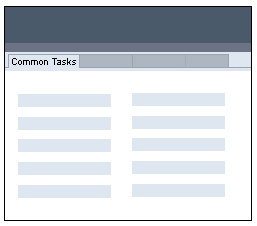
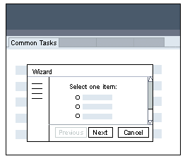
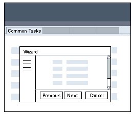
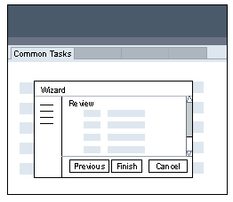
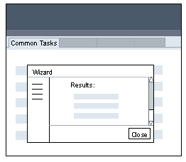
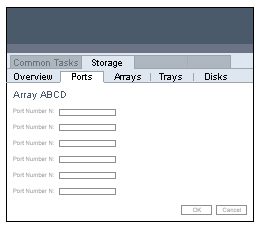

Sun Web Application Guidelines - Version 4.1
Sun Web Application Guidelines - Version 4.1
|
|
|
| [ Table of Contents | 0 Revision History | 1 Introduction | 2 Visual Design | 3 Windows and Pages | 4 Mastheads | 5 Top-Level Navigation | 6 Content Area | 7 Simple Elements | 8 Complex Elements | 9 Tables | 10 Topology | 11 Contextual Help | 12 Search | 13 Wizards | 14 Alerts and Messages | 15 Progress Indicators | 16 Alarms and Status Indicators | 17 Login Page | 18 Version Page | Appendices ] |
How To Use These Guidelines - An Introduction
5 Top-Level Navigation > 5.5 Common Tasks Page > 5.5.3 Action-Based Tasks > 5.5.3.1.2 From Among Up to 25 Objects
| 1. | Common Tasks Page | |||
|  | ||||
| User clicks on a common task button. | ||||
| 2. | Wizard - Select Object | |||
|  | The Cancel button closes the wizard and returns the user to the Common Tasks page. | |||
| User selects one of the objects and clicks the Next button. | ||||
| 3. | Wizard - Remaining Steps | |||
|  | As many steps as needed should be included in the wizard. If the user presses the Cancel button, the wizard is closed, and the user returns to the Common Tasks page without action. |
|||
| User proceeds through the wizard by clicking the Next button. | ||||
| 4. | Wizard - Review Step | |||
|  | A review page should be shown if applicable. The last step should have a Finish button instead of Next. | |||
| User clicks the Finish button. | ||||
| 5. | Wizard - Results Step | |||
|  | This might be a simple results message, but should show enough relevant detail about the action that took place so the user doesn't need additional information. | |||
| User then presses the Close button. | ||||
| 6. | Object's Page | |||
|  | The result of the action taken is shown on the object's page. | |||
5 Top-Level Navigation > 5.5 Common Tasks Page > 5.5.3 Action-Based Tasks > 5.5.3.1.2 From Among Up to 25 Objects
| [ Table of Contents | 0 Revision History | 1 Introduction | 2 Visual Design | 3 Windows and Pages | 4 Mastheads | 5 Top-Level Navigation | 6 Content Area | 7 Simple Elements | 8 Complex Elements | 9 Tables | 10 Topology | 11 Contextual Help | 12 Search | 13 Wizards | 14 Alerts and Messages | 15 Progress Indicators | 16 Alarms and Status Indicators | 17 Login Page | 18 Version Page | Appendices ] |
| Privacy Policy | Terms of Use | Trademarks | Copyright 2007 Sun Microsystems, Inc. |